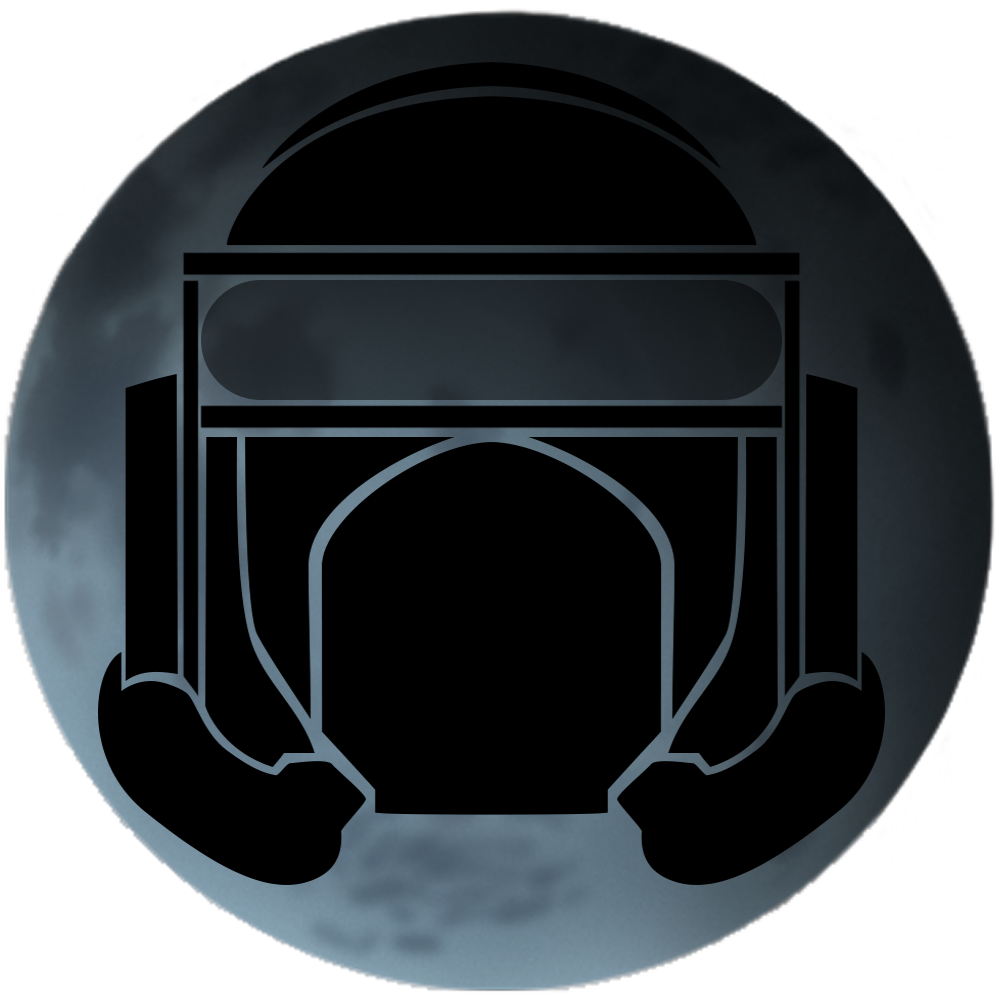

Moon Base

Motivação e Inspiração

O jogo Moon Base é um jogo com temática de aventura e Ficção Científica, cuja
ideia surgiu como resultado de uma combinação entre diversos elementos pelos quais os membros da
equipe se interessam.
Para a temática houve inspiração em filmes como Guardiões da Galáxia e a franquia Star Wars. Também
se inspiraram na franquia Uncharted para a criação do sistema de combate e a movimentação, os quais
também foram fortemente inspirados pela franquia Prince of Persia.
Para a estrutura do corpo dos personagens, ainda pegamos como inspiração os personagens da franquia
Rayman.
O motivo de escolhermos fazer este jogo, é justamente o fato de que queríamos criar um jogo para
explorar e desafiar nossas habilidades obtidas ao longo do curso, como a narrativa, o design, a
modelagem e a programação.
Para tanto, buscamos criar um jogo que combinasse diversos elementos de outras obras que gostamos,
como os jogos e filmes já mencionados, buscando criar um jogo que considerássemos realmente
interessante e divertido, e esperamos obter um resultado que agrade ao público tanto quanto a nós.
Enredo
A história do jogo se passa em um futuro distante, no ano de 2220.
Neste período, a tecnologia de exploração espacial já evoluiu muito, e várias naves espaciais viajam
para os planetas de nosso sistema solar em busca de recursos. No entanto, a espécie humana não teria
o conhecimento de qualquer forma de vida fora da Terra.
Na Lua, uma prisão de segurança máxima foi instaurada, e para lá são levados os prisioneiros mais
perigosos e hábeis da Terra... ou ao menos é o que o governo diz...
O jogador acompanhará Trip Spacerruner, um ex-caçador-de-recompensas que se encontra, atualmente,
como um prisioneiro sendo transportado à Base Lunar.
No entanto, Trip consegue escapar de sua cela quando a nave é interceptada por um grupo de piratas
alienígenas, e ele deve agora encontrar um modo de fugir da nave, à medida que lentamente a
perturbadora verdade a respeito da Base Lunar vai se revelando.
Ambientação
O jogo inteiro se passa dentro de uma única nave espacial, que possuirá um mapa
relativamente amplo e cheio de caminhos e conexões, as quais se tornarão gradativamente acessíveis à
medida que o jogador avança na história e desbloqueia novos itens.
O fato de que o jogo se passa em uma espaçonave, garante ao jogo um aspecto extremamente tecnológico
e futurista, com tons metálicos prevalecendo na maior parte do tempo.
Personagens
Trip Spacerunner
É o protagonista do jogo.
Um homem que cresceu nas ruas, adquirindo muitas habilidades, que vão
desde
técnicas de combate até técnicas de movimentação e deslocamento (parkour).
Ao crescer,
alistou-se na
academia espacial, mas apesar de suas habilidades, acabou sendo expulso devido a seus métodos
“não
convencionais” de lidar com as coisas, e então decidiu se tornar caçador de recompensas.
No entanto, por motivos não revelados, acaba sendo capturado pelo governo, e inicia o jogo sendo
transportado como prisioneiro para a Base Lunar.
Capitão Sulla
Oficial do Governo e capitão da nave na qual Tripp está sendo transportado como prisioneiro.
Leva seu trabalho muito a sério e não gosta de mercenários.
Quando a nave é invadida por alienígenas, coopera com Tripp para que ambos consigam recuperar o
controle da nave.
Como o capitão conhece todos os detalhes de sua nave e dá as instruções do que Tripp deve fazer.
Líder dos Piratas
Líder da equipe de invasão Pirata, não se sabe nada sobre sua identidade e seus motivos para
atacar a nave.
Lidera um grupo de alienígenas de origem desconhecida, possivelmente faz parte desta mesma
raça.
Possui uma armadura completa e esta fortemente armado, Nível de ameaça alta.
Equipamentos
Pistola
Causa pouco dano e tem uma baixa taxa de disparos.
Sua munição é ilimitada, o que a
torna a arma ideal para que o jogador possa economizar munição.
Rifle
Causa muito dano e tem uma alta taxa de disparos.
No entanto, sua munição é limitada, e o
jogador deverá encontrar munição durante
o jogo.
Espada
A arma que causa mais dano no jogo, além de que atordoa os inimigos atingidos. Sua maior fraqueza é que ela exige que o jogador se aproxime dos inimigos.
Magnetic
Com elas o jogador poderá andar pelas paredes magnéticas e alcançar areas antes inacessiveis.
Hackertron
Capaz de Hackear portas bloqueadas, mas para ter sucesso o jogador precisará resolver um puzzle.
Controles
| Comando | Função |
|---|---|
| W-A-S-D | Movimentação |
| Barra de Espaço | Saltar |
| Shift (Apertar) | Rolamento / Sortar-se de Quinas |
| Shift (Segurar) | Agachar |
| Mouse | Mover Câmera |
| C | Centralizar Camêra |
| Q / Botão do Meio do Mouse | Sacar / Guardar Arma |
| Botão Direito do Mouse | Mirar |
| Botão Esquerdo do Mouse | Atirar |
| E / Scroll do Mouse | Trocar de Arma |
| 1 | Selecionar Espada |
| 2 | Selecionar Pistola |
| 3 | Selecionar Rifle |
| R | Recarregar Arma |
| F | Ativar Painéis |
| P / Esc | Pausar |
Sistema de Pontuação
Não há um sistema de pontuação no jogo.
O jogo, no entanto, segue uma história narrativa com início, meio e fim.
Assim sendo, o objetivo do jogador é meramente conseguir chegar ao final da história para concluir o
jogo.
Arte
O jogo possui uma temática futurista, que se faz presente em todos os elementos
do jogo.
Mas além da temática futurista, vale destacar que optou-se pela utilização de uma estética
cartunizada e low-poly, que permitiria que o jogo possuísse um visual agradável e, ainda assim, não
fosse tão difícil de se modelar, e não se comprometesse tanto o desempenho do jogo.
Para a estrutura do corpo dos personagens, pegamos como inspiração os personagens da franquia Rayman
(tronco com cabeça, mãos e pés flutuando), o que daria um visual mais distinto aos personagens e
facilitaria a animação.
Desafios
Em cada uma das salas, o jogador encontrará desafios de plataforma, parkour e
puzzle, além de diversos inimigos que serão um grande obstáculo ao jogador.
Existem 4 classes de inimigos básicos: Atirador, Tático, Espadachim e Pesado; Cada um destes possui
atributos e comportamentos distintos, e fornecerão desafios diferentes para o jogador.
Diversas portas fechadas, pontes desativadas e plataformas móveis estarão espalhadas pelos cenários,
e o jogador deverá alcançar e ativar um painel de controle específico para ativá-las, para que possa
prosseguir em sua jornada.
Haverá ainda alguns painéis especiais, que exigirão que o jogador realize um minigame de hack, no
qual terá de conduzir os dados até as entradas de acesso para poder desbloqueá-los.
Ao final de cada trecho da história, o jogador irá se deparar com uma batalha de chefe, o que
tornará o jogo ainda mais desafiador.